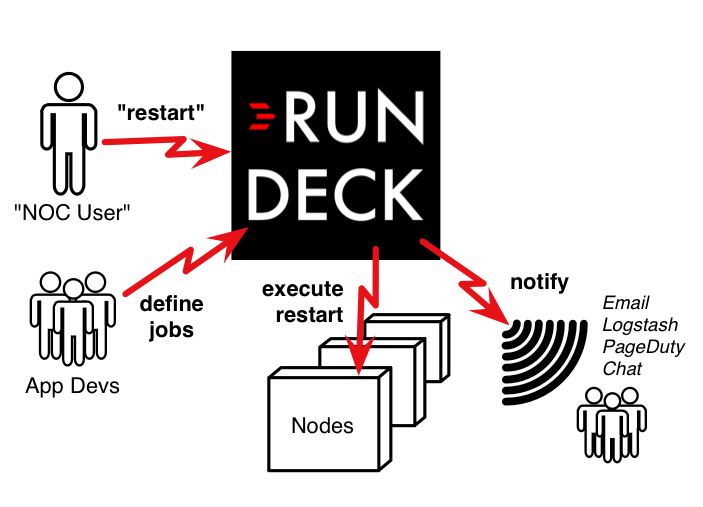
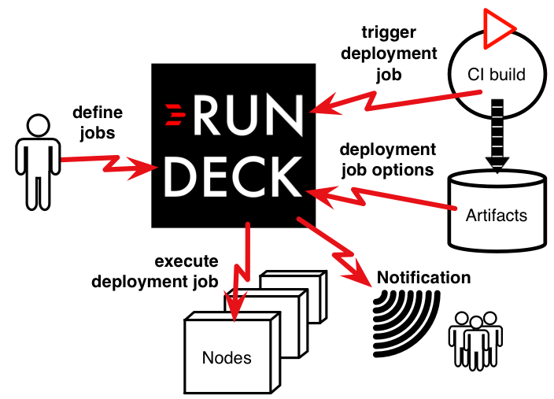

Go Fast. Be Secure.
Turn your operations procedures into self-service jobs.
Safely give others the control and visibility they need.
"...the swiss army knife for ops." -Jordan Koch
"...essential tool for getting operations under control." -John D'Esposito
How to Use Rundeck
1
Create a job by defining a single step or a workflow that can execute any set of commands, scripts, or tools on any number of local or remote nodes. Jobs can be triggered by the scheduler or on-demand via the web interface or API.
2
Safely hand off the job to others to execute or follow the output -- depending on the permissions you give them. Collaborate with others and build your organization's library of repeatable and auditable actions. You can also let users to run ad-hoc commands (if your security policies allow it).
3
Enjoy being the Hero. You've safely given Dev and QA teams access to self-service operations tasks (deployments, restarts, data management, etc). You've made collaboration with your Operations colleagues easier. You've improved everyone's visibility into Operations activity. Now you can spend less of your time fielding repetitive requests and more of your time doing new and interesting things that will further the business.
Popular Uses

Share Standard Operating Procedures
(Runbook Automation)
Build up a common set of reusable procedures. Share those procedures with others as executable code rather than error prone "do this, then that" text files or checklists. (more...)
Job Scheduler
Use Rundeck as an easier to manage and more secure replacement for Cron or as a replacement for legacy tools like Control-M or HP Operations Orchestration. Rundeck gives your users a simple web interface (GUI or API) to go to for both on-demand and scheduled operations tasks. (more...)
Incident Response
Reduce MTTR, reduce escalations, and lower total support costs. Collaborate on the definition of standard operating procedures. Make it simple for a response team to run both standard operating procedures and ad-hoc commands as needed. Safely pull in subject matter experts to resolve problems in environments to which you otherwise couldn't give them access. Integrate with monitoring and ticket systems. Satisfy auditors because Rundeck logs all activity.

Automated Deployment After a Build
Move towards Continuous Delivery by having your build or CI server trigger Rundeck to execute the post-build deployment process and deployment verification testing. Reuse those same jobs to deploy across all environments automatically (zero-click) or with a manual trigger (one-click).
Self-Service Test Environments
Provide Dev and QA with self-service provisioning of test environments. Use Rundeck's option providers to allow users to select specific versions of artifacts to deploy. Pair with virtualization or cloud infrastructure to allow techniques like short-lived, branch-specific test environments.
Data Processing Jobs in the Cloud
Coordinate the lifecycle of a data processing job, including the provisioning and de-provisioning of the supporting cloud infrastructure. Rundeck's Web-UI and ACL policies enable you to safely delegate to non-technical users the ability to kick-off and view data processing jobs.

Custom Platforms "Powered By Rundeck"
Build a custom Operations Platform that leverages Rundeck's full featured API. Integrate with other tools, build your own plugins, and build your own business-specific UI.
Rundeck Case Studies
John D'Esposito Implements ChatOps for Financial Services
When companies want to get the most out of their Cloud infrastructure investment, New York based Devopulence is called in to help rethink and retool operations. Rundeck is used as a key part of their ChatOps and Incident Response solutions.
(read more...)

Jordan Koch from Disney
Rundeck is a key tool in the toolbox for Jordan Koch and his Systems Engineering colleagues. As with any diverse and expanding organization, this team realized that they needed both standard operating procedures and way to safely give people on other teams self-service access to those procedures.
(read more...)
Mark Maun at Ticketmaster
Mark uses Rundeck to enable a single team to safely deploy applications across environments and empower support teams to take action to resolve issues immediately. Mark has used Rundeck to enable initiatives that have reduced escalations by 30% - 40%, overall support incident costs by 55%, and reduced mean time to repair (MTTR) by 50% - 150% per service.
(read more...)
Prakash Rudraraju at Data.com
Prakash uses Rundeck to: 1. provide visibility into deployments in secure production environments 2. safely enable self-service capabilities that protect the capacity of the TechOps Team 3. improve the ease of patching and routine maintenance by leveraging a library of repeatable procedures.
(read more...)
Gigantor Project at Salesforce.com
As one of the world's largest cloud based business services, Salesforce.com needs high-scale and high-velocity operations. Rundeck is one of the key operations tools that lets them do just that. The Salesforce.com team took a toolchain approach that features Rundeck, SaltStack, and a custom internal tool called Kingpin.
(read more...)